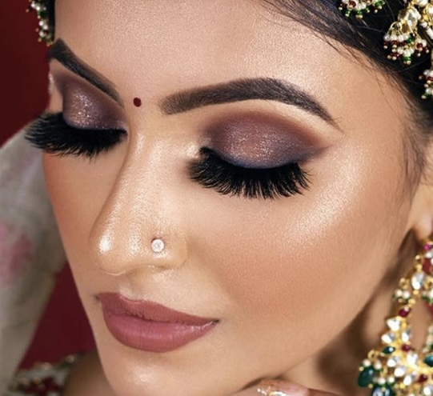

HD Bridal Makeup
HD Bridal Makeup is a specialized technique that uses high-end, light-scattering products to create a flawless, natural, and non-cakey finish. It is specifically designed to hide imperfections like fine lines, pores, and blemishes in a way that remains invisible to high-definition cameras.
Go Back Home
